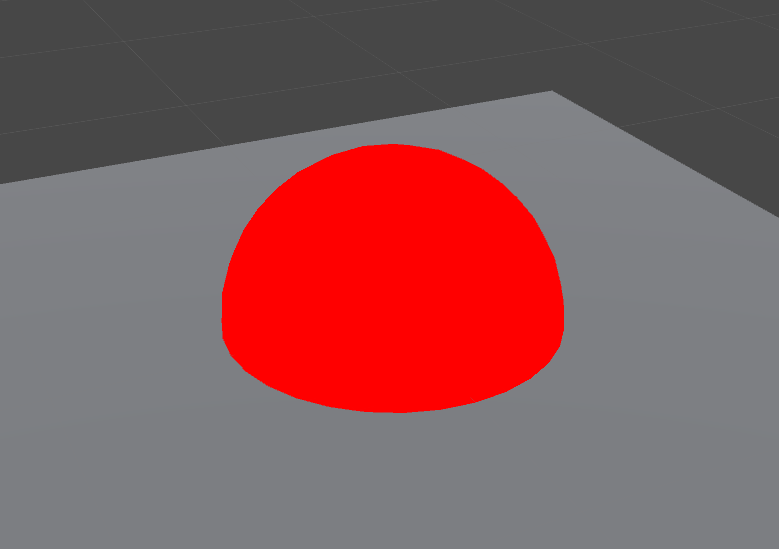
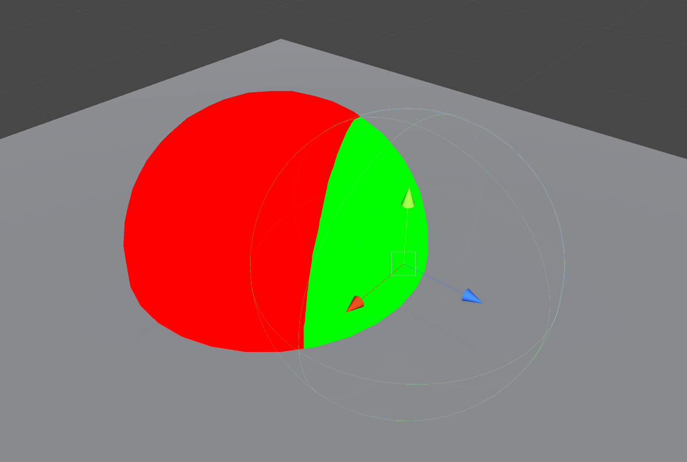
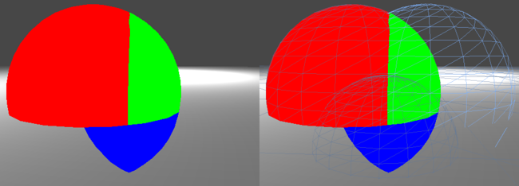
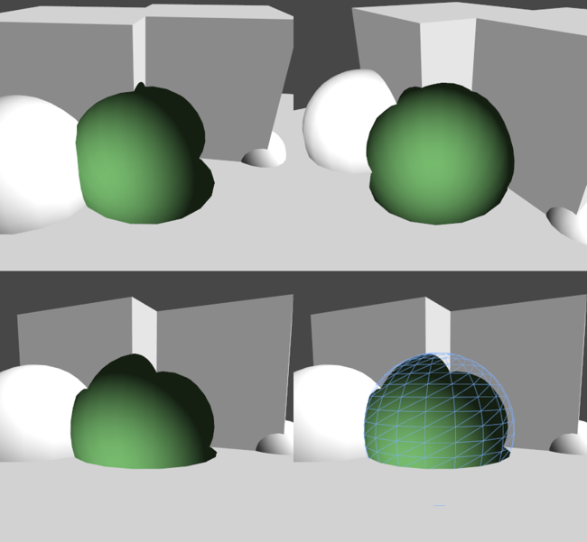

Stencil （模版）
模板缓冲区具有作为保存或丢弃像素的每个像素掩码的通用作用。
Stencil 与颜色缓冲区和深度缓冲区类似，模板缓冲区可以为屏幕上的每个像素点保存一个无符号整数值(通常的话是个8位整数)。这个值的具体意义视程序的具体应用而定。在渲染的过程中，可以用这个值与一个预先设定的参考值相比较，根据比较的结果来决定是否更新相应的像素点的颜色值。这个比较的过程被称为模板测试。模板测试发生在透明度测试（alpha test）之后，深度测试（depth test）之前。如果模板测试通过，则相应的像素点更新，否则不更新。
语法
stencil
{
Ref referenceValue
ReadMask readMask
WriteMask writeMask
Comp comparisonFunction
Pass stencilOperation
Fail stencilOperation
ZFail stencilOperation
}
1. Ref（参考值）
Ref referenceValue
Ref用来设定参考值 referenceValue，这个值将用来与模板缓冲中的值进行比较。referenceValue 是一个取值范围位 0~255 的整数。
2. ReadMask（读遮罩）
ReadMask readMask
readMask 将和 referenceValue 以及 stencilBufferValue 进行按位与（&）操作，readMask 取值范围也是 0～255 的整数，默认值为 255，二进制位 1111 1111，即读取的时候不对referenceValue 和 stencilBufferValue 产生效果，读取的还是原始值。
3. WriteMask（写遮罩）
WriteMask writeMask
WriteMask 是当写入模板缓冲时进行掩码操作（按位与【&】），writeMask 取值范围是 0～255 的整数，默认值也是 255，即当修改 stencilBufferValue 值时，写入的仍然是原始值。
4. Comp（比较）
Comp comparisonFunction
Comp 是定义参考值（referenceValue）与缓冲值（stencilBufferValue）比较的操作函数，默认值：always。
5. Pass
Pass stencilOperation
Pass 是定义当模板测试（和深度测试）通过时，则根据（stencilOperation值）对模板缓冲值（stencilBufferValue）进行处理，默认值：keep。
6. Fail
Fail stencilOperation
Fail 是定义当模板测试（和深度测试）失败时，则根据（stencilOperation值）对模板缓冲值（stencilBufferValue）进行处理，默认值：keep。
7. ZFail
ZFail stencilOperation
ZFail 是定义当模板测试通过而深度测试失败时，则根据（stencilOperation 值）对模板缓冲值（stencilBufferValue）进行处理，默认值：keep。
Comp、Pass、Fail 和 ZFail 被应用于背面消隐的几何体（只渲染正面的几何体），除非指定 Cull Front 时才会被应用于正面消隐的几何体（只渲染几何体的背面）。你也可以明确指定双面的模板状态通过定义 CompFront，PassFront，FailFront，ZFailFront（几何体正面），和 CompBack、PassBack、FailBack、ZFailBack（几何体背面）。
模板测试判断依据
和深度测试一样，在 unity 中，每个像素的模板测试也有它自己一套独立的依据，具体公式如下：
if（referenceValue&readMask comparisonFunction stencilBufferValue&readMask）
通过像素
else
抛弃像素
在这个公式中，主要分 comparisonFunction 的左边部分和右边部分
referenceValue 是有 Ref 来定义的，这个是由程序员来定义的，readMask 是模板值读取掩码，它和 referenceValue 进行按位与（&）操作作为公式左边的结果，默认值为255，即按位与（&）的结果就是 referenceValue 本身。
stencilBufferValue 是对应位置当前模板缓冲区的值，同样与readMask 做按位掩码与操作，结果做为右边的部分。
comparisonFunction 比较操作通过 Comp 命令定义，公式左右两边的结果将通过它进行判断，其取值及其意义如下面列表所示。
8. Comparison Function（比较函数）
比较函数是下列之一:
| 关键字 | 说明 |
|---|---|
| Greater | 仅当参考值大于缓冲区中的值的时候渲染像素。 |
| GEqual | 仅当参考值大于等于缓冲区中的值的时候渲染像素。 |
| Less | 仅当参考值小于缓冲区中的值的时候渲染像素。 |
| LEqual | 仅当参考值小于等于缓冲区中的值的时候渲染像素。 |
| Equal | 仅当参考值等于缓冲区中的值的时候渲染像素。 |
| NotEqual | 仅当参考值不等于缓冲区中的值的时候渲染像素。 |
| Always | 使模版测试总是通过 |
9. Stencil Operation（模版操作）
在上一步的模板测试之后，无论模板测试通过与否，都要对模板进行相应的更新。具体怎么更新，则由程序员自己定义。上面关于模板缓冲语法中，Pass，Fail，ZFail等命令就是根据不同判断条件对模板缓冲区的值（stencilBufferValue）进行更新的操作，这些命令取值（stencilOperation）的类型及意义如下面列表所示：
| 关键字 | 说明 |
|---|---|
| Keep | 保持缓冲区的当前内容，即 stencilBufferValue 不变。 |
| Zero | 将 0 写入缓存区，即 stencilBufferValue 值变为0。 |
| Replace | 将参考值写入缓存区，即将 referenceValue 赋值给 stencilBufferValue。 |
| IncrSat | stencilBufferValue 加1，如果 stencilBufferValue 超过 255 了，那么保留为 255，即不大于 255。 |
| DecrSat | stencilBufferValue 减1，如果 stencilBufferValue 超过 0，那么保留为 0，即不小于 0。 |
| Invert | 将当前模板缓冲值（ stencilBufferValue ）按位取反。 |
| IncrWrap | 当前缓冲的值加 1，如果缓冲值超过 255 了，那么变成 0，（然后继续自增）。 |
| DecrWrap | 当前缓冲的值减 1，如果缓冲值已经为 0，那么变成 255，（然后继续自减）。 |
10. Deferred rendering path（延迟渲染）
在延迟渲染路径中渲染的对象的模板功能是有限的，因为在基本通道和照明通道模板缓冲区用于其他用途。在这两个阶段中，在着色器中定义的模板状态将被忽略，并只在最终 Pass 时考虑。因为遮罩基于模版测试的这些对象是不可能的，但他们仍然可以修改缓冲区内容，被之后渲染在帧中的对象使用。对象在前向渲染路径下的渲染遵循延迟路径（例如，透明对象或没有表面着色的对象） 将模版状态恢复正常。
延迟渲染路径使用模板缓冲区的三个最高位，再加上四个最高位-这取决于在场景中使用了多少光遮罩层。可以在使用模板的读写遮罩的 “干净” 的位范围内工作，或者你可以在照明 Pass 后迫使 Camera 使用 camera.clearstencilafterlightingpass 清洁模版缓冲区。
示例 1：
着色器设置参考值为 2，无论深度测试是否通过（模板测试设置为总是通过），如果深度测试失败将减量（和 wrap）当前值为255（假设我们开始用一个干净的模板缓冲区）。
Shader "Red"
{
SubShader
{
Tags { "RenderType"="Opaque" "Queue"="Geometry" }
Pass
{
Stencil
{
// 参考值为 2，stencilBuffer 值默认为 0。
Ref 2
// stencil 比较方式是永远通过，此时我们不管 stencilBufferValue 是多少，模版测试都是成功通过的。
Comp always
// pass 的处理是替换，当模板测试通过则将referenceValue 替换给 stencilBufferValue，此时
stencilBufferValue 值为2。
Pass replace
// ZFail 的处理是溢出型减 1。
ZFail decrWrap
}
// 下面是 stencil 和 zbuffer 都通过的话就执行。把点渲染成红色。
CGPROGRAM
#pragma vertex vert
#pragma fragment frag
struct appdata
{
float4 vertex : POSITION;
};
struct v2f
{
float4 pos : SV_POSITION;
};
v2f vert(appdata v)
{
v2f o;
o.pos = mul(UNITY_MATRIX_MVP, v.vertex);
return o;
}
half4 frag(v2f i) : SV_Target
{
return half4(1, 0, 0, 1);
}
ENDCG
} // end pass
} // end subshader
}

现在在平面以上的点，stencilbuffer 值全为 2，因为都被 replace 了。在平面下面的点，通过了 stencil 测试但是没有通过深度测试，stencil 值减 1 全为255。
小节：
● 使用模板缓冲区最重要的两个值：当前模板缓冲值（stencilBufferValue）和模板参考值（referenceValue）。
● 模板测试主要就是对这个两个值使用特定的比较操作：Never，Always，Less ，LEqual，Greater，Equal 等等。
● 模板测试之后要对模板缓冲区的值（stencilBufferValue）进行更新操作，更新操作包括：Keep，Zero，Replace，IncrSat，DecrSat，Invert 等等。
● 模板测试之后可以根据结果对模板缓冲区做不同的更新操作，比如模板测试成功操作 Pass，模板测试失败操作 Fail，深度测试失败操作 ZFail，还有正对正面和背面精确更新操作 PassBack，PassFront，FailBack等等。
示例 2：
第二个着色器将只对第一个(红色)着色器通过,因为它是检查值等于 2。如果模版测试失败将值溢出型减 1。
Shader "Green"
{
SubShader
{
Tags { "RenderType"="Opaque" "Queue"="Geometry+1" }
Pass
{
Stencil
{
Ref 2
Comp Equal
Pass replace
Fail decrWrap
ZFail keep
}
CGPROGRAM
#pragma vertex vert
#pragma fragment frag
struct appdata
{
float4 vertex : POSITION;
};
struct v2f
{
float4 pos : SV_POSITION;
};
v2f vert(appdata v)
{
v2f o; o.pos = mul(UNITY_MATRIX_MVP, v.vertex);
return o;
}
float4 frag(v2f o) : SV_Target
{
return float4(0, 1, 0, 1);
}
ENDCG
}
}
}

示例 3：
第三个着色器将只通过模版值被减少了2次的像素，第一个着色器（红色）的深度测试失败的并且第二个着色器模版测试失败的像素。
Shader "Blud"
{
SubShader
{
Tags { "RenderType"="Opaque" "Queue"="Geometry+2" }
Pass
{
Stencil
{
Ref 254
Comp Equal
}
CGPROGRAM
#pragma vertex vert
#pragma fragment frag
struct appdata
{
float4 vertex : POSITION;
};
struct v2f
{
float4 pos : SV_POSITION;
};
v2f vert(appdata v)
{
v2f o; o.pos = mul(UNITY_MATRIX_MVP, v.vertex);
return o;
}
float4 frag(v2f o) : SV_Target
{
return float4(0, 0, 1, 1);
}
ENDCG
}
}
}

然后使用标准表面着色器再渲染一次，使用正面剔除，禁用深度测试和模版测试丢弃之前标记的像素。
Shader "Hole"
{
Properties
{
_Color ("MainColor", Color) = (1,1,1,1)
}
SubShader
{
Tags { "RenderType"="Opaque" "Queue"="Geometry+2" }
ColorMask RGB
Cull Front
ZTest Always
Stencil
{
Ref 1
Comp notequal
}
CGPROGRAM
#pragma surface surf Lambert
float4 _Color;
struct Input
{
float4 color : COLOR;
};
void surf(Input IN, inout SurfaceOutput o)
{
o.Albedo = _Color.rgb;
o.Normal = half3(0, 0, -1);
o.Alpha = 1;
}
ENDCG
}
}
